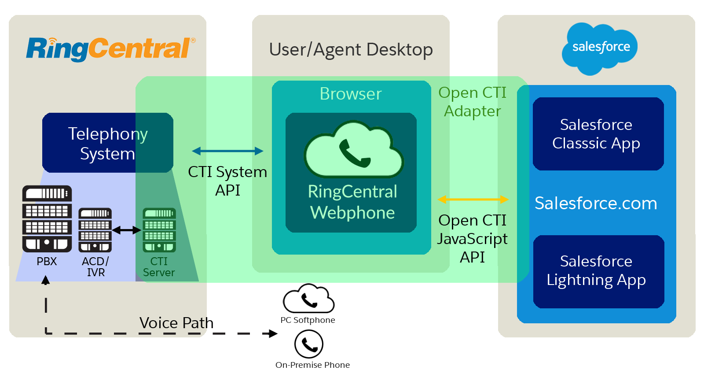

Learn how to implement the RingCentral Web Widget on Salesforce to customize your CTI experience with click-to-dial, inbound screen-pop and integrated call logging.
Start TutorialWelcome to the RingCentral Web Widget
The RingCentral Web Widget provides a fast way to add communications to your web app with a pre-built webphone that can handle voice, SMS.
This tutorial's navigation controls are located above this text. Use to move to the next step of the tutorial. Use to move to the previous step of the tutorial (if there is one). Use to see an overview of all the steps in the tutorial.
Static HTML
To implement the Web Widget on any web page, simply add a few lines of JavaScript to instantiate the widget. This will automatically link and enable the tel and sms URI schemes if they are not already registered.
Salesforce Open CTI
We will add the RingCentral Web Widget to Salesforce via the Open CTI framework.

Creating a Salesforce Call Center
- Create a Call Center with
salesforce_CallCenterDefinition.xml - This uses the
/apex/RCPhoneCTI Adapter URL
Create the Visualforce Page
The Web Widget is rendered in a Visualforce page. To create this use the following steps:
- Open the Developer Console by clicking the link from the Settings menu item.
- Click File > New > Visualforce Page
- Name the page
RCPhone - Paste in the
<apex:page >code to the right - Click
Edit>Fix Indentation
Add the Web Widget Visualforce Page to an App
Select your desired Salesforce app and add the widget using the following steps:
- Go to Salesforce Setup by clicking the Setup icon in the menu bar.
- Navigate to the App Manager using the Quick Find or the
Apps>App Managermenu item.
- Select an existing app such as
LightningSalesor create a new app.

- Under the
Utility Bar, addOpen CTI Softphone
- Click
Saveand thenDone